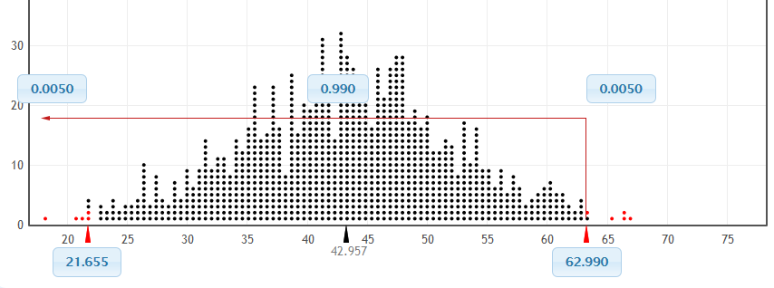

Module Resampling Methods
Authors: David Jacobson, Ph.D., and Wei Wei, Ph.D.
Competency Area: Big Data
Learning objectives: After this module, students will be able to
Describe and explain the bootstrap resampling method
Generate bootstrap samples using R
Solve related problems using bootstrap resampling method
Describe and explain the cross-validation assessment method
Create and use a function for cross-validating a model’s R-square statistic using k-fold cross-validation
Use the cv.glm function in the boot package in R for performing cross-validation for generalized linear models
Understand the difference between the raw cross-validation error and the adjusted cross-validation error
Resources
https://www.youtube.com/watch?v=_nhgHjdLE-I
http://www.stat.umn.edu/geyer/3701/notes/bootstrap.html
https://stat.ethz.ch/R-manual/R-devel/library/datasets/html/state.html
https://vincentarelbundock.github.io/Rdatasets/doc/boot/nuclear.html
https://www.rdocumentation.org/packages/boot/versions/1.3-20/topics/cv.glm
Introduction
Building a model can be a never ending process in which we constantly improve the model by adding interactions, taking away variables, doing transformations and so on. However, at some point we need to confirm that we have the best model at the time, or even a good model. That leads to the question: How do we judge the quality of a model? In almost all cases the answer has to be in relation to other models. This could be an analysis of residuals, the results of an ANOVA test, a Wald test, drop-in deviance, and the AIC or BIC score. In this module, we consider bootstrapping and cross-validation error.
Sometimes, for one reason or another, there is not a good analytic solution to a problem and another tactic is needed. This is especially true for measuring uncertainty for confidence intervals. To overcome this, Bradley Efron introduced the bootstrap in 1979. Since then the bootstrap has grown to revolutionize modern statistics and is indispensable.
Residual diagnostics and model tests such as ANOVA and AIC are a bit old fashioned and came along before modern computing horsepower. The preferred method to assess model quality – at least by most data scientists – is cross-validation, sometimes called k-fold cross-validation. The data is broken into k (usually five or ten) non-overlapping sections. Then a model is fitted on \(k - 1\) sections of the data, which is then used to make predictions based on the kth section. This is repeated k times until every section has been held out for testing once and included in model fitting \(k - 1\) times. Cross-validation provides a measure of the predictive accuracy of a model, which is largely considered a good means of assessing model quality.
Introduction to Bootstrap Sampling
The bootstrap is a widely applicable and extremely powerful sampling method. As a simple example, the bootstrap can be used to estimate the standard errors of the coefficients from a linear regression fit. The power of the bootstrap lies in the fact that it can be easily applied to a wide range of statistical learning methods, including some for which a measure of variability is otherwise difficult to obtain and is not automatically output by statistical software.
Bootstrap resampling is to use one random sample as a population, and repeatedly draw samples with the same size from that population. Ideally, we would like to sample repeatedly from the population to create a sampling distribution. In practice, it is not feasible to know the population. Instead of actually making many copies of the sample and sampling from the population, we use a sampling technique that is equivalent: we sample with replacement from the original sample. Sampling with replacement means that once an individual is selected for the sample, that individual is still available to be selected again. Each sample selected in this way, with replacement from the original sample, is called a bootstrap sample.
Figure 1 illustrates the bootstrap sampling. Suppose the four shapes (triangle, rectangle, diamond, and pentagon) form the original sample. Three possible bootstrap samples are {triangle, rectangle, triangle, pentagon}, {pentagon, diamond, pentagon, pentagon}, and {triangle, rectangle, diamond, diamond}. Each bootstrap sample contains the same number of shapes as the original sample. Each shape can be reselected in each sample.
Figure 1. Illustration of bootstrap samples
For each bootstrap sample, we can compute the statistic of interest, giving us a bootstrap statistic. Example 1 illustrates how to obtain a bootstrap sample, and further how to obtain bootstrap distribution of bootstrap statistic.
Example 1. In a data science course, there are six students with their final grades being {70,81,85,92,95, 63}. Generate a bootstrap sample using R.
The R code is
The first line of the code is to generate a vector of the data for the students’ grades. The second line is to generate a bootstrap sample, and name it as “bootsample”. The function sample() is to generate a random bootstrap sample based on the original sample, grades. The argument “replace=TRUE” is to generate a sample with replacement. The third line “bootsample” is to show the sample elements.
In this example, the bootstrap sample is {63,63,85,81,95,81}. As this is a random process, each time you run the code, you will get a different sample.
Use the R function mean() to calculate the mean of the bootstrap sample.
The mean of the above bootstrap sample is 78.
If we repeat this process multiple times and obtain multiple bootstrap sample means, then we can form a bootstrap distribution. In example 1, if we run the bootstrap sampling process multiple times, we will get multiple bootstrap sample means. Again, this is a random process, so the bootstrap sample means will be random. Example 2 shows how to generate bootstrap distribution using R.
Example 2. Based on the six students’ grades in example 1, generate 20 bootstrap samples, find the bootstrap sample means, and form a bootstrap distribution using a histogram.
The histogram of the bootstrap sample means is shown in figure 2.
Figure 2. Histogram of the bootstrap sample means of students’ grades.
From figure 2, the bootstrap distribution is close to a normal distribution. With computer technology, we are not limited to just 100 bootstrap samples. We can generate a better histogram of the variability with large amount of bootstrap samples. Figure 3 shows the bootstrap distribution with 10,000 bootstrap sample means.
Figure 3. Histogram of bootstrap sample means of 10,000 bootstrap samples of students’ grades.
The general process of creating a bootstrap distribution is
Generate bootstrap samples by sampling with replacement from the original sample, using the same sample size
Compute the statistic of interest for each of the bootstrap samples
Collect the statistics for many bootstrap samples to create a bootstrap distribution
Activity 1: Use the R dataset mtcars to perform the following:
Generate a bootstrap sample of the variable mile per gallon (mpg);
Repeat the previous process and generate1000 bootstrap samples and calculate the mean of each sample;
Generate a histogram of the bootstrap sample means.
What is the distribution of the bootstrap sample mean? What is the approximate mean of the bootstrap sample means? Is that close to the mean of mpg in the original sample?
Activity 2: Use the data on www.stat.umn.edu/geyer/3701/data/boot1.csv to do the following
x is a data frame, change x to a vector
Generate 1000 bootstrap samples from the original sample of x and calculate the mean
Generate a histogram of the bootstrap sample means
What is the distribution of the bootstrap sample mean?
Theoretical Explanation of Bootstrap Sampling
In this section, we will introduce the theoretical approach of bootstrap sampling and bootstrap distribution.
Let \(X_{1},X_{2},\ldots X_{n}\) be random variables following the distribution F. The empirical distribution is defined as
\[\widehat{F}\left( x \right) = \frac{1}{n}\sum_{i = 1}^{n}{1\{ X_{i} \leq x\}}\ ,\ \ X \in R\]
We are interested in a parameter \(\theta = \phi(F)\). A natural estimate of \(\theta\) is \(\widehat{\theta} = \phi(\widehat{F})\). A sequence of identical, independently distributed (iid) sample of size n, {\(X_{1}^{*},\ X_{2}^{*},\ \ldots,\ X_{n}^{*}\)} are drawn from \(\widehat{F}\), with replacement. Then the sample {\(X_{1}^{*},\ X_{2}^{*},\ \ldots,\ X_{n}^{*}\)} is a bootstrap sample. Let \({\widehat{\theta}}_{n} = g(X_{1},\ldots X_{n})\) denote some estimator. A general algorithm for the bootstrap distribution is
Generate bootstrap sample {\(X_{1}^{*},\ X_{2}^{*},\ \ldots,\ X_{n}^{*}\)} independently drawn from \(\widehat{F}\), with replacement.
Compute the estimator \({\widehat{\theta}}_{n}^{*} = g(X_{1}^{*},\ \ldots,\ X_{n}^{*})\)
Repeat the previous steps B times and get estimators \({\widehat{\theta}}_{n,1}^{*},\ldots,\ {\widehat{\theta}}_{n,B}^{*}\)
Generate the distribution \(G_{n,B}\left( t,{\widehat{F}}_{n} \right) = \frac{1}{n}\sum 1\{{\widehat{\theta}}^{*} < t\}\) with the variance \(\widehat{s} = \sqrt{\frac{1}{B}\sum_{j = 1}^{B}\left( {\widehat{\theta}}_{n,j}^{*} - \overline{\theta} \right)^{2}}\)
Bootstrap Confidence Interval
The variability of bootstrap statistics is similar to the variability of sample statistics if we were to sample repeatedly from the population, so we can use the standard deviation of the bootstrap distribution to estimate the standard error of the sample statistic. The standard deviation of the bootstrap statistics in a bootstrap distribution gives a good approximation of the standard error of the statistic. We can calculate the standard error of the bootstrap distribution using the R function sd().
Example 3. Use the previous student grade sample in example 1 to generate 100 bootstrap samples, calculate the mean of each bootstrap sample. Calculate the mean of the original sample. Calculate the standard error of the bootstrap sample means. The R code is
So the standard error of the bootstrap sample means is 4.15. The mean of the original sample means is 81.
When a bootstrap distribution for a sample statistic is a normal distribution, we can estimate a 95% confidence interval using the following formula
\[(statistic \pm 1.96*SE)\]
where SE is the standard error.
So in example 3, a 95% confidence interval for the bootstrap sample mean grade can be
\[\left( 81 \pm 1.96*4.15 \right) = (72.87,89.13)\]
Activity 3: A sample of prices of skateboards for sale online (Lock et al. 2013) is shown in table 1. Answer the following questions based on the 20 skateboard prices.
| 19.95 | 24.99 | 39.99 | 34.99 | 30.99 | 92.5 | 84.99 | 119.99 | 19.99 | 114.99 |
| 44.99 | 50 | 84.99 | 29.91 | 159.99 | 61.99 | 25 | 27.5 | 84.99 | 199 |
Table 1. Prices of skate boards for sale online
Generate 50 bootstrap samples of the price and calculate the mean of each sample
Generate a histogram of the 50 bootstrap sample means
Is the distribution normal?
Calculate the mean of the original sample
Calculate the standard error of the 50 bootstrap sample means
Construct a 95% confidence interval of the price using the 50 bootstrap samples
Confidence Interval based on Bootstrap Percentiles
Besides the 95% confidence interval, we may be interested in 90% or 99% confidence intervals. If the bootstrap distribution is approximately normal, we can construct a confidence interval by using the percentiles in the bootstrap distribution of statistic to construct a confidence level. This procedure for finding bootstrap confidence intervals are flexible and can be applied in a wide variety of different situations and with many different parameters (Lock, 2013). The process is simple if we already have the bootstrap distribution generated. If we denote the confidence level as \(1 - \alpha\). From the bootstrap distribution, we need to find the end points corresponding to \((\frac{\alpha}{2},\ 1 - \frac{\alpha}{2}\)). For example, if we would like to generate a 99% confidence interval, then we need to find the end points under the bootstrap distribution corresponding to the left proportions of \(0.005\) and \(0.995\) (figure 4)

Figure 4. The 99% confidence interval using the percentile method. The two red triangle points are corresponding to the left proportion of 0.005, and 0.995. So the 99% confidence interval is (21.655, 62.990).
The process of generate a bootstrap confidence interval using the percentile method is:
Generate the bootstrap distribution of sample statistic
Use the R function quantile() to get the two end points of a confidence interval corresponding to a confidence level
Example 4. Use the data CommuteAtlanta in R package Lock5Data. a) Generate 10,000 bootstrap samples of the commute time (Time) and calculate the mean of those 10,000 samples; b) Generate a histogram of the bootstrap sample means; c) Generate the 90% confidence interval using the percentile method.
The R code is
The 90% confidence interval is (27.61, 30.68).
Activity 4: Use the CommuteAtlanta data in the R package Lock5Data to do the following:
Generate 1000 bootstrap samples, and calculate the correlation between distance and time using cor(Distance[], Time[])
Generate the histogram of the bootstrap sample correlations
Generate a 96% confidence interval of the correlation
Use R package boot to generate bootstrap sample statistics
The R function boot() in the package boot can generate bootstrap sample statistics and calculate the standard error of the bootstrap distribution of the sample statistic. Firstly, you need to install the package boot in R, and require the library of boot by library(boot). The function is
boot( data, statistic, R)
For the arguments:
data: vector, matrix or data frame. If it is a matrix or data frame then each row is considered as one multivariate observation
statistic: function which when applied to data returns a vector containing the statistic of interest.
R: the number of bootstrap samples/replicates.
Example 5: Use the data Portfolio in the package ISLR to do the following: a) write a function named “sumvar” to find var(X+Y); b) run the function for index 1:100; c) use boot() to generate 1000 bootstrap samples and use sumvar to find the statistic.
What is the standard error of the bootstrap distribution of var(X+Y)?
The R code is
The original bootstrap sample has the variance of X+Y as 3.69, and the standard error of the bootstrap distribution of var(X+Y) is 0.44.
Activity 5: Use the data mtcars in R to do the following: a) write a function named “tstatistic” to find the t statistic of mpg comparing the mean mpg with 25; b) use boot() to generate 1000 bootstrap samples and use tstatistic to find the statistic of the samples;
What is the standard error of the bootstrap distribution of the t statistics?
Cross-Validation Method
In multiple regression, we examine methods for selecting the variables to include in a regression equation. When description is our primary goal, the selection and interpretation of a regression model signals the end of our labor. But when our goal is prediction, we can justifiably ask, “How well will this equation perform in the real world?”
By definition, regression techniques obtain model parameters that are optimal for a given set of data. In ordinary least squares regression, the model parameters are selected to minimize the sum of squared errors of prediction (residuals) and, conversely, maximize the amount of variance accounted for in the response variable (R-squared). Because the equation has been optimized for the given set of data, it won’t perform as well with a new set of data.
For example, an exercise physiologist might use regression analysis to develop an equation for predicting the expected number of calories a person will burn while exercising on a treadmill. The response variable is the number of calories burned (calculated from the amount of oxygen consumed), and the predictor variables might include duration of exercise (minutes), percentage of time spent at their target heart rate, average speed (mph), age (years), gender, and body mass index (BMI). If we fit an ordinary least squares regression equation to this data, we’ll obtain model parameters that uniquely maximize the R-squared for this particular set of observations.
But our researcher wants to use this equation to predict the calories burned by individuals in general, not only those in the original study. We know that the equation won’t perform as well with a new sample of observations, but how much will we lose? Cross-validation is a useful method for evaluating the generalizability of a regression equation.
In cross-validation, a portion of the data is selected as the training sample, and a portion is selected as the hold-out sample. A regression equation is developed on the training sample and then applied to the hold-out sample. Because the hold-out sample wasn’t involved in the selection of the model parameters, the performance on this sample is a more accurate estimate of the operating characteristics of the model with new data.
In k-fold cross-validation, the sample is divided into k subsamples. Each of the k subsamples serves as as a hold-out group, and the combined observations from the remaining \(k - 1\) subsamples serve as the training group. The performance for the k prediction equations applied to the k hold-out samples is recorded and then averaged. (When k equals n, the total number of observations, this approach is called jackknifing.)
The following listing provides a function (called shrinkage( )) for cross-validating a model’s R-square statistic using k-fold cross-validation.
Using the above listing, we define our functions, create a matrix of predictor and predicted values, get the raw R-squared, and get the cross-validated R-squared.
We’ll use the state.x77 dataset in the base package for an example. Suppose we want to explore the relationship between a state’s murder rate and other characteristics of the state, including population, illiteracy rate, average income, and frost levels (mean number of days below freezing).
Because the lm( ) function requires a data frame (and the state.x77 dataset is contained in a matrix), we can simplify our life with the code below. This code creates a data frame called states, containing the variables we’re interested in. We’ll use this new data frame for the remainder of the example. (https://stat.ethz.ch/R-manual/R-devel/library/datasets/html/state.html)
Now let’s fit the multiple regression model with the lm( ) function (see figure 5).
Figure 5. Multiple linear regression.
The shrinkage( ) function is used to perform a 10-fold cross-validation with the states data, using the model with all four predictor variables (figure 6).
Figure 6. Use of the shrinkage( ) function to perform a 10-fold cross-validation with the states data.
We can see that the R-square based on the sample (0.567) is overly optimistic. A better estimate of the amount of variance in murder rates that this model will account for with new data is the cross-validated R-square (0.441). (Note that observations are assigned to the k groups randomly, so we’ll get a slightly different result each time we execute the shrinkage( ) function.)
Activity 6: The boot package is a library of R code that’s included with the standard installation but isn’t automatically loaded. Load boot with a call to library(boot). You’ll find a data frame called nuclear, which contains data on the construction of nuclear power plants in the United States in the late 1960s. (https://vincentarelbundock.github.io/Rdatasets/doc/boot/nuclear.html)
Access the documentation by entering ?nuclear and examine the details of the variables. (Note there is a mistake for date, which provides the date that the construction permits were issued – it should read “measured in years since January 1 1900 to the nearest month.”)
One of the original objectives was to predict the cost of further construction of these power plants. Create a fit and summary of a linear regression model that aims to model cost by t1 and t2, two variables that describe the different elapsed times associated with the application for and issue of various permits.
Use the shrinkage( ) function to perform a 10-fold cross-validation with the nuclear data. Use the above model with two predictor variables.
We could use cross-validation in variable selection by choosing a model that demonstrates better generalizability. For example, a model with two predictors (Population and Illiteracy) shows less R-square shrinkage (0.040 versus 0.126) than the full model (figure 7).
Figure 7. Use of the shrinkage( ) function to perform a 10-fold cross-validation with the states data (two-predictor model).
This may make the two-predictor model a more attractive alternative.
All other things being equal, a regression equation that’s based on a larger training sample and one that’s more representative of the population of interest will cross-validate better. We’ll get less R-squared shrinkage and make more accurate predictions.
Activity 7: Returning to the nuclear data frame, refit the model. Expand the model that you fit in Activity 6 by including a third predictor variable for the date the construction permit was issued. Use the shrinkage( ) function to perform a 10-fold cross-validation on this three-predictor model.
cv.glm for Performing Cross-Validation
There are a number of packages and functions in R that assist in performing cross-validation. Each has its own limitations or quirks, so rather than going through a number of incomplete functions, we show one that works well for generalized linear models (including linear regression).
The boot package by Brian Ripley has cv.glm for performing cross-validation. As the name implies, it works only for generalized linear models, which will suffice for generalized linear models, which will suffice for a number of situations. (https://www.rdocumentation.org/packages/boot/versions/1.3-20/topics/cv.glm)
The results from cv.glm include delta, which has two numbers, the raw cross-validation error based on the cost function (in this case the mean squared error, which is a measure of correctness for an estimator) for all the folds and the adjusted cross-validation error. This second number compensates for not using leave-one-out cross-validation, which is like k-fold cross-validation except that each fold is the all but one data point with one point held out.
While we got a nice number for the error, it helps us only if we can compare it to other models, so we run the same process for the other model we built, rebuilding it with glm first.
Once again, the second model, fit2_glm, is the superior model. Figure 8 shows how much AIC and cross-validation agree on the relative merits of the different models. The scales are all different but the shapes of the plots are identical.
Figure 8. Plots for cross-validation error (raw and adjusted) and AIC for states models. The scales are different, as they should be, but the shapes are identical, indicating that fit2_glm is the best model.
Following is the R code used to generate the plots in figure 8:
Determining the quality of a model is an important step in the model building process. This can take the form of traditional tests of fit or more modern techniques like cross-validation. These can all be shaped by helping select which variables are included in a model and which are excluded.
Activity 8: Use the cv.glm( ) function to compare the two models in activities 6 and 7.
Activity 9: Generate plots for cross-validation error (raw and adjusted) and AIC for the two models that you created for the nuclear data.
References
Baumer, B.S., Kaplan, D.T., and Horton, N.J., 2017. Modern Data Science with R, CRC Press.
James, G., Witten, D., Hastie, T., and Tibshirani R., 2014. An Introduction to Statistical Learning with Applications in R. 2nd edition, Springer
Lock, R. H., Lock, P. F., Morgan K.L., Lock E.F., and Lock D.F., 2013. Statistics: Unlock the Power of Data, Wiley.
Mackisack, M., “Favourite Experiments: An Addendum to What Is the Use of Experiments Conducted by Statistics Students?’ Journal of Statistics Education, 1994, http://www.amstat.org/publications/jse/v2n1/mackisack.supp.html